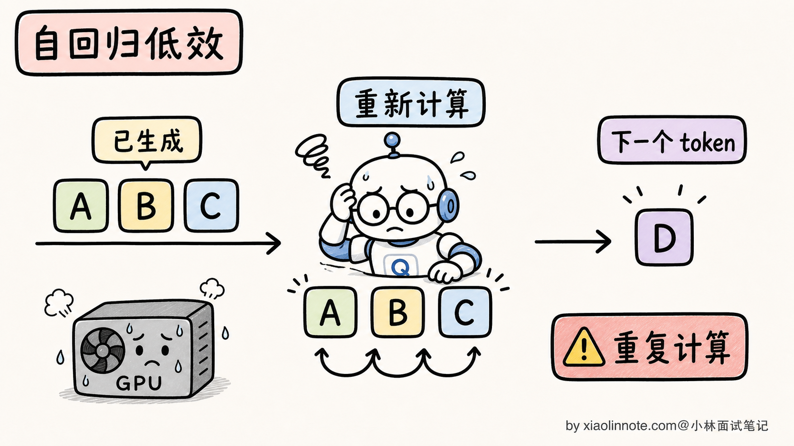
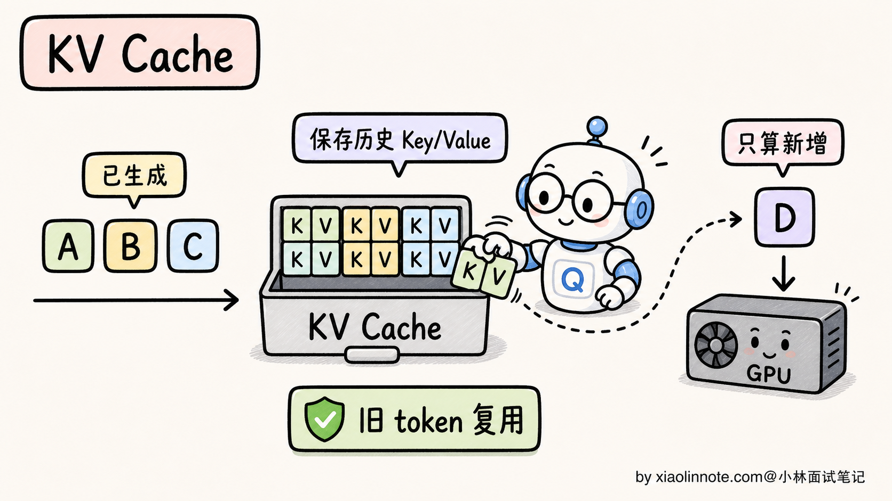
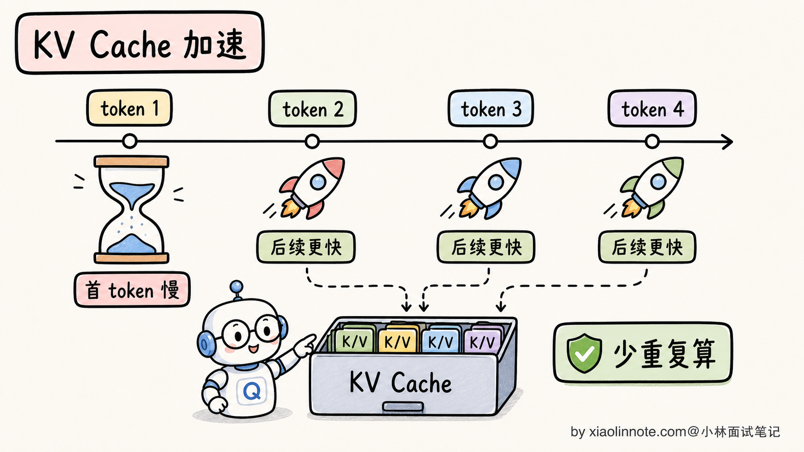
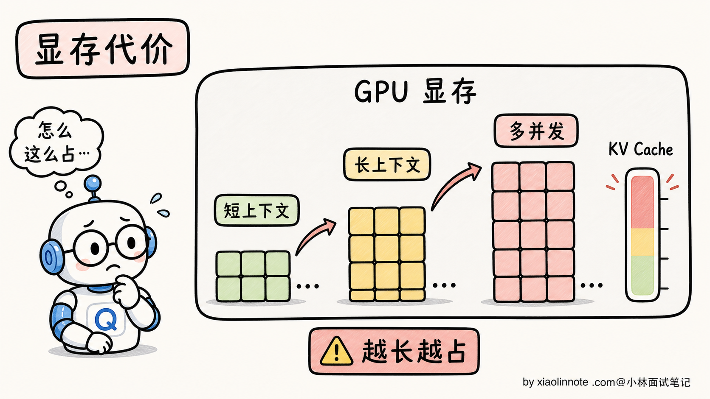
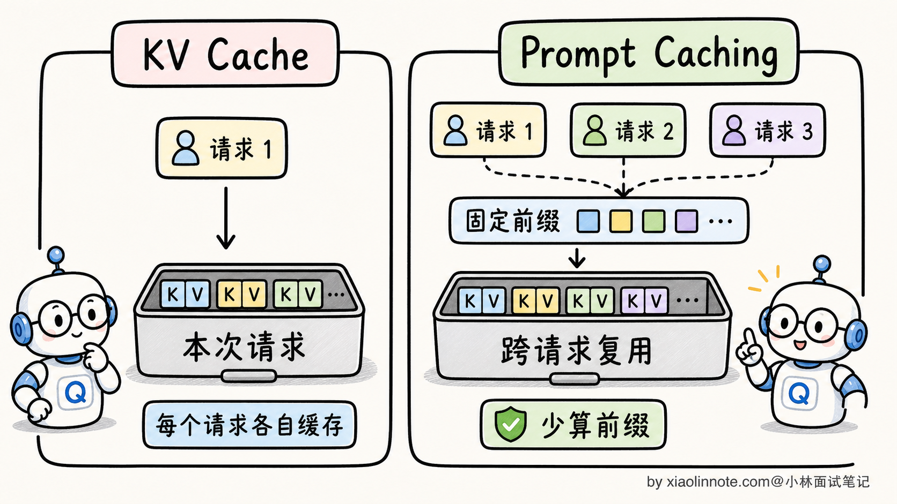
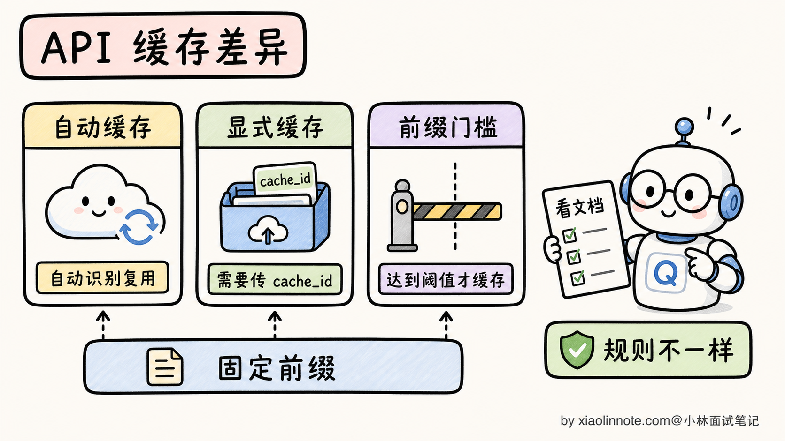
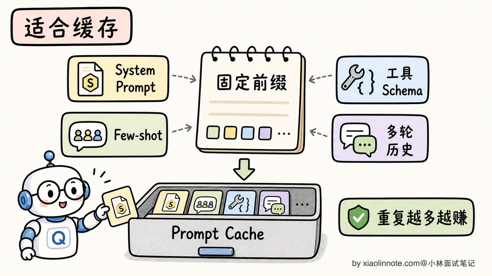
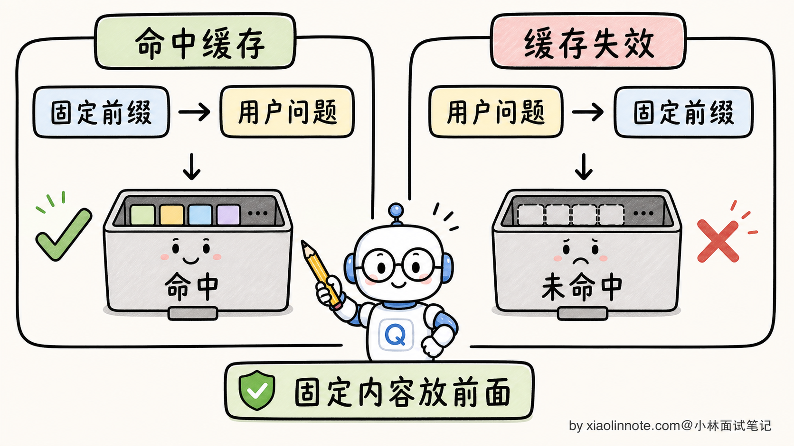
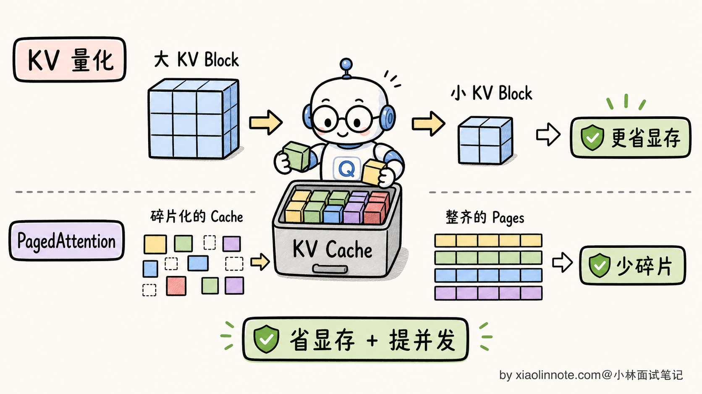

本篇目录
14. KV Cache 是什么？Prompt Caching 的原理是什么？
👔面试官：来讲讲什么是 KV Cache？Prompt Caching 又是怎么回事？这两个有什么关系？
🙋♂️我：KV Cache 是 Transformer 里的一个东西，存的是 K 和 V 矩阵。Prompt Caching 是 Claude 的一个 API 功能，能减少 token 费用。
👔面试官：……你只说了表面。KV Cache 具体是缓存什么、为了解决什么问题？为什么自回归生成必须要 KV Cache？没有 KV Cache 推理速度会变成什么样？
🙋♂️我：哦哦，因为每次生成新 token 都要重新计算前面所有 token 的 attention，KV Cache 就是把前面算过的存起来。
👔面试官：对了一半。那 Prompt Caching 和 KV Cache 是同一个东西吗？两者具体什么关系？为什么 OpenAI、Anthropic 都把 Prompt Caching 作为新功能大力推广？
🙋♂️我：呃……KV Cache 是模型内部的，Prompt Caching 是 API 层面的？
👔面试官：方向对，但具体差别能讲清楚吗？KV Cache 是「单次推理内」的优化（同一次生成的不同 token 之间复用），Prompt Caching 是「跨请求」的优化（不同请求之间复用相同前缀）。这两个是同一个底层机制在不同时间尺度上的应用，没搞清楚这层关系，就讲不出 Prompt Caching 的真正价值。
把这几个反问串起来其实就一句话，KV Cache 和 Prompt Caching 是同一套缓存思路在两个时间尺度上的延伸，前者是单次推理内的、后者是跨请求的。理解这一层，省钱和加速到底怎么发生的就清楚了。
💡 简要回答
我理解 KV Cache 和 Prompt Caching 是同一个机制在两个时间尺度上的应用。
KV Cache 是「单次推理内」的优化。自回归生成时，每次生成新 token 都要让模型重新对前面所有 token 算 attention。如果每次都从零开始算，N 个 token 的总计算量是 O(N³)，根本不可接受。KV Cache 把前面所有 token 的 K 和 V 矩阵缓存在 GPU 显存里，每次新 token 只算自己的 Q、K、V，然后跟缓存的 K/V 做 attention，把总计算量从 O(N³) 降到 O(N²)。
Prompt Caching 是「跨请求」的优化。把上面 KV Cache 的概念从「单次生成内」扩展到「不同请求之间」。如果两个请求的 Prompt 前缀完全相同（比如都用同样的 System Prompt），第一个请求算完的 KV Cache 在 API 服务器上保留下来，第二个请求遇到相同前缀直接跳过计算、复用已有 KV Cache，只算新增的部分。
价值上的区别：
- KV Cache 解决的是「让自回归生成可行」，是 Transformer 推理的基本盘
- Prompt Caching 解决的是「降低 API 成本和延迟」，是工程层面的 ROI 优化。不同厂商的计费规则不一样，比如 Claude 的缓存读取价格可以低到普通输入 token 的 10%，OpenAI 等平台也有自己的缓存折扣；延迟收益也和前缀长度、命中率、服务端负载有关，不能死记一个固定比例
最关键的认知是，Prompt Caching 不是新发明，是 KV Cache 这个底层机制的工程级延伸。理解了 KV Cache，Prompt Caching 几乎是自然推论。
实际工程使用 Prompt Caching 的核心要点是：固定内容在前、动态内容在后，前缀只要差一个字符就缓存 miss。
📝 详细解析
自回归生成里隐藏的低效问题
要理解 KV Cache，得先看清楚自回归生成本身的低效在哪里。
LLM 是自回归生成的，每次只产出一个新 token，把它拼到序列末尾，再让模型对整个新序列重新计算一遍 attention，得到下一个 token。听起来很自然，但隐藏着一个巨大的浪费。
假设要生成 10 个 token，朴素实现的过程是：
第 1 步：输入 [P]（Prompt），算 attention，输出 token 1
第 2 步：输入 [P, t1]，算 attention，输出 token 2
第 3 步：输入 [P, t1, t2]，算 attention，输出 token 3
...
第 10 步：输入 [P, t1, t2, ..., t9]，算 attention，输出 token 10每一步都把前面所有 token 重新算一遍 attention，包括 P 这个长 Prompt（可能几千 tokens）。

总计算量分析：第 i 步要对 i 个 token 做 attention，attention 复杂度是 O(i²)，总计算量是 Σ i² 从 1 到 N，约 O(N³)。生成一个 1000 token 的回答，等于做 10 亿次单 token 计算量的运算。这个开销在 GPT-2 时代可能还能忍，到了大模型时代根本跑不动。
注意一件事：第 2 步算的「P」的 attention，和第 1 步算的「P」的 attention 是完全一样的（因为输入和模型参数都没变）。每一步重算前缀，是纯粹的浪费。
KV Cache 就是为了消除这个浪费而生的。
KV Cache：单次推理内的优化
KV Cache 的核心思路一句话：把前面所有 token 的 K 和 V 矩阵缓存起来，每次新 token 只算自己的部分。
具体怎么做？要先回到 attention 公式：
Attention(Q, K, V) = softmax(Q · K^T / √d_k) · V注意这里：
- 新 token 只是一个 Q（它在「问」前面所有 token）
- 它做点积的对象 K^T 和加权求和的对象 V，都来自前面所有 token
- 但前面所有 token 的 K 和 V 是固定的，不会随新 token 而变（因为 K 和 V 是从已有 token 的 embedding 算的，新 token 不影响它们）
所以前面所有 token 的 K 和 V 完全可以缓存，每次只算新 token 自己的 Q、K、V，然后跟缓存的 K/V 拼起来做 attention。

工作流程详细看：
# 朴素实现（无 KV Cache）
for step in range(max_tokens):
K_all, V_all = model.compute_KV(全部已有 token) # 重复算前面的
Q_new = model.compute_Q(全部已有 token)
attention_out = softmax(Q_new @ K_all.T / sqrt(d_k)) @ V_all
next_token = sample(attention_out[-1])
# 带 KV Cache 的实现
kv_cache = []
for step in range(max_tokens):
if step == 0:
# 首次：处理整个 Prompt，把 K/V 全部缓存
K, V = model.compute_KV(prompt_tokens)
kv_cache.append((K, V))
else:
# 后续：只算新 token 的 Q、K、V
K_new, V_new = model.compute_KV([new_token])
kv_cache.append((K_new, V_new))
Q_new = model.compute_Q([current_token])
K_all = concat(kv_cache.K) # 缓存里取出来用
V_all = concat(kv_cache.V)
attention_out = softmax(Q_new @ K_all.T / sqrt(d_k)) @ V_all
next_token = sample(attention_out)关键变化：每一步只算 1 个 token 的 K/V（O(1) 工作量），而不是 N 个 token（O(N) 工作量）。总计算量：
| 实现 | 第 i 步开销 | N 步总开销 |
|---|---|---|
| 朴素（无 KV Cache） | O(i²) | O(N³) |
| 带 KV Cache | O(i) | O(N²) |

KV Cache 不是「锦上添花的优化」，是「让自回归生成可行的基本盘」。所有现代 LLM 推理框架（vLLM、SGLang、TGI、llama.cpp）都默认开启 KV Cache，没人会关掉它。
KV Cache 的显存代价
KV Cache 让计算速度大幅提升，但代价是显存占用。前面所有 token 的 K/V 都要常驻显存，长上下文下这是个不小的负担。
KV Cache 显存大小公式：
KV Cache 显存 = 2（K 和 V 各一份）× B（batch size）× N（序列长）× L（层数）× H（头数）× d_k（每头维度）× 2 字节（FP16）对一个 7B 模型（L=32、H=32、d_k=128），跑 batch=1、N=32K：
2 × 1 × 32000 × 32 × 32 × 128 × 2 ≈ 17 GB光 KV Cache 就要 17GB，加上模型权重 14GB，总共 31GB，一张 4090（24GB）根本放不下。

这就是为什么大模型部署有一系列围绕 KV Cache 的优化（PagedAttention、KV Cache 量化、MQA/GQA 共享 K/V 等），目标都是把 KV Cache 显存压下来。这些优化是另一个层面的话题，本节不展开，只需要知道 KV Cache 的显存压力是 LLM 工程的核心议题之一。
从 KV Cache 到 Prompt Caching：同一机制的扩展
到这里，KV Cache 解决的是「单次生成内」的重复计算问题。但还有一个更隐蔽的浪费：不同请求之间的重复计算。
考虑一个真实场景：你做了一个客服 AI，System Prompt 写了 3000 tokens 的产品知识、对话规则、Few-shot 示例，所有用户的请求都用这同一个 System Prompt 开头。一天 10 万次对话，每次请求都从零开始处理这 3000 tokens 的 System Prompt，重新算 3000 个 token 的 KV Cache 才能开始生成。这就是巨大的算力浪费。

Prompt Caching 的核心思路就是：把 KV Cache 的复用范围从「单次推理内」扩展到「不同请求之间」。
具体机制：
- API 服务器维护一个 KV Cache 池子，按「Prompt 前缀的哈希值」索引
- 第一个请求来时，正常计算 System Prompt 的 KV Cache，额外把这份 KV Cache 保留在显存池子里几分钟
- 第二个请求来时，如果 Prompt 前缀和池子里某份缓存一致，直接复用那份 KV Cache，只算用户新增的部分
技术上这就是 KV Cache 在「时间维度」的延伸：单次内的 KV Cache 在 token 之间共享，Prompt Caching 在请求之间共享。底层的「缓存 K/V 矩阵避免重复计算」机制完全一样。
主流 API 的 Prompt Caching 实现
不同的 API 厂商对 Prompt Caching 的实现方式不太一样，主要分两派。
Claude（Anthropic）：显式标记缓存断点
Claude 的做法是要用户显式告诉 API「我希望缓存到这里」。在希望缓存的内容末尾加一个 cache_control 标记：
import anthropic
client = anthropic.Anthropic()
# System Prompt 带缓存断点：把「到这里为止的内容」标记为可缓存
SYSTEM_WITH_CACHE = [
{
"type": "text",
"text": "你是一位专业的劳动法顾问。\n\n以下是完整的《劳动合同法》条文：\n\n[数千字的法律条文内容...]",
"cache_control": {"type": "ephemeral"} # 断点：这份法律条文会被缓存
}
]
# 第一次请求：建立缓存（会有约 1.25x 的写入费用）
response1 = client.messages.create(
model="你的 Claude 模型 ID",
max_tokens=512,
system=SYSTEM_WITH_CACHE,
messages=[{"role": "user", "content": "员工试用期最长可以是多久？"}]
)
# 第二次请求：system 前缀完全一致，命中缓存（只需支付 10% 的 token 费用）
response2 = client.messages.create(
model="你的 Claude 模型 ID",
max_tokens=512,
system=SYSTEM_WITH_CACHE,
messages=[{"role": "user", "content": "劳动合同必须包含哪些必备条款？"}]
)显式标记的好处是用户清楚控制哪些内容缓存、哪些不缓存。代价是要改代码、加配置。
OpenAI：自动缓存
OpenAI 的做法更轻量：只要请求中的 Prompt 前缀超过一定长度（1024 tokens），系统会自动尝试缓存。命中时不需要额外操作，API 响应里会告诉你有多少 token 命中了缓存。
自动缓存的好处是开发者不用改代码就能享受到，缺点是控制粒度不如显式标记精细。

价格优势：
以 Claude 的 ephemeral prompt cache 为例：
- 命中 Prompt Cache 的 token 费用是正常输入 token 的 10%（便宜 90%）
- 写入缓存的那次请求会有少量额外费用（约为正常的 1.25x）
- 后续只要有 2 次以上命中，总体就是省钱的
延迟优势：命中缓存时首 token 延迟通常会下降，因为 Prompt 部分不用重算了。具体能降多少，要看缓存前缀长度、模型、并发和服务端调度，工程上要用真实链路压测。
适合用 Prompt Caching 的场景
Prompt Caching 最适合「前面固定、后面变化」的使用模式，三类典型场景：
场景 1：固定 System Prompt 的应用
客服系统、AI 助手、代码 Review 工具，System Prompt 包含大量产品知识、规则说明、Few-shot 示例。用户每次发消息，System Prompt 都是固定的，可以一直命中缓存。这是最常见、收益最大的场景。
场景 2：基于同一份长文档的多次问答
比如「把合同文本放进 Prompt，然后问 10 个不同的问题」。第一次问问题时建立缓存，后续 9 次都命中缓存，节省了大量重复处理文档的成本。法律 AI、金融 AI、医疗 AI 这种场景特别多。
场景 3：大量 Few-shot 示例
如果你的 Prompt 里有 10-20 组 Few-shot 示例（用于引导模型输出特定格式），这部分内容非常适合缓存。每次用户的实际问题不同，但 Few-shot 部分一样。

工程陷阱：固定内容在前、动态内容在后
Prompt Caching 听起来很美，但实战中有一个最常见的陷阱：前缀必须完全一致才能命中缓存，哪怕多了一个空格、改了一个字符，就算缓存 miss、重新计算。
最经常踩的雷是把日期、用户名这类动态内容放在固定内容前面：
❌ 会让缓存失效的结构（动态内容在前）：
今天是 2026-03-07，当前用户：张三
[数千字的系统提示 + 产品知识库]
← cache_control 断点
用户问题：我想退换货问题：日期和用户名每次都不同，导致整个前缀每次都变了，缓存永远 miss。每次还是要从零开始算几千字的系统提示。
✅ 正确结构（固定内容在前，动态内容在后）：
[数千字的系统提示 + 产品知识库]
← cache_control 断点放这里
今天是 2026-03-07，当前用户：张三
用户问题：我想退换货把所有固定内容集中到断点之前，动态内容放在断点之后。前缀稳定不变，每次都能命中缓存。

第二个常见陷阱是缓存的时效性。Claude 的 ephemeral 缓存默认有效期是 5 分钟，如果超过 5 分钟没有命中过，缓存就会失效。这意味着：
- 高流量应用（每分钟几十次以上请求）通常能自然保持缓存活跃
- 低流量应用（几小时一次请求）会频繁失效，反而省不了多少
如果你的应用是低流量场景，Prompt Caching 的收益可能不如预期，甚至因为「写入缓存的 1.25x 费用」反而更贵。这是需要在使用前评估清楚的。
进阶：KV Cache 量化与 PagedAttention
最后简单提两个 KV Cache 的进阶优化方向，作为面试加分项。
KV Cache 量化：把 KV Cache 从 FP16 量化到 INT8 甚至 INT4，显存占用减半到 1/4。但 KV Cache 对量化误差比权重更敏感，特别是长链路推理（数学题、代码题），所以这是 2024-2026 年研究热点，主流方案还在演进。
PagedAttention：vLLM 框架的核心创新，灵感来自操作系统虚拟内存。把 KV Cache 切成固定大小的「Block」（典型 16 个 token 一块），每个请求拿到的是逻辑 Block 列表，由一张 Block Table 映射到物理显存。这样消除了 KV Cache 的显存碎片，部署时显存利用率从 30-40% 拉到 90%+。

这两个方向的具体细节是另一个层面的话题，但能在面试里提一句，会显示你对 KV Cache 这个核心机制有深入跟进。
🎯 面试总结
回到开头那段对话，问到 KV Cache 和 Prompt Caching，最重要的是先把核心关系讲清楚：这两个不是不相关的优化，是同一个底层机制在两个时间尺度上的应用。KV Cache 是「单次推理内」的优化（同一次生成里不同 token 之间复用），Prompt Caching 是「跨请求」的优化（不同请求之间复用相同前缀）。这一句话能讲清楚，就已经比绝大多数候选人深刻了。
接下来把 KV Cache 的来龙去脉讲明白。自回归生成的朴素实现是 O(N³)，每步都重算前面所有 token 的 attention。KV Cache 把前面所有 token 的 K/V 矩阵缓存起来，每步只算新 token 的部分，总计算量降到 O(N²)。这不是「锦上添花的优化」，是让自回归生成可行的基本盘，所有现代推理框架（vLLM、SGLang、TGI）默认都开。
然后讲 Prompt Caching 的工程价值。把 KV Cache 复用范围扩展到不同请求之间，让 N 个用户共用一个 System Prompt 的 KV Cache。Claude 用显式断点（cache_control），OpenAI 用自动缓存，本质都是同一个机制，只是触发方式和计费规则不同。面试里说「能显著降低重复前缀成本和首 token 延迟」就够稳，不要把某一家价格比例说成全行业通用。
最关键的一句话是讲清工程陷阱：固定内容在前、动态内容在后，前缀差一个字符就 miss。这是最容易踩的雷，把日期、用户名这种动态内容放前面，会让缓存永远失效。还有一条是低流量应用可能省不到，因为缓存通常只有 5 分钟时效性，没有持续命中的话写入费用反而更贵。
如果还想再加分，可以提一句 KV Cache 量化和 PagedAttention 这种进阶优化方向，让面试官知道你对这个核心机制有持续跟进。能讲到这一层，已经是面试里很难追问的水平了。
对了，大模型面试题会在「公众号@小林面试笔记题」持续更新，林友们赶紧关注起来，别错过最新干货哦！